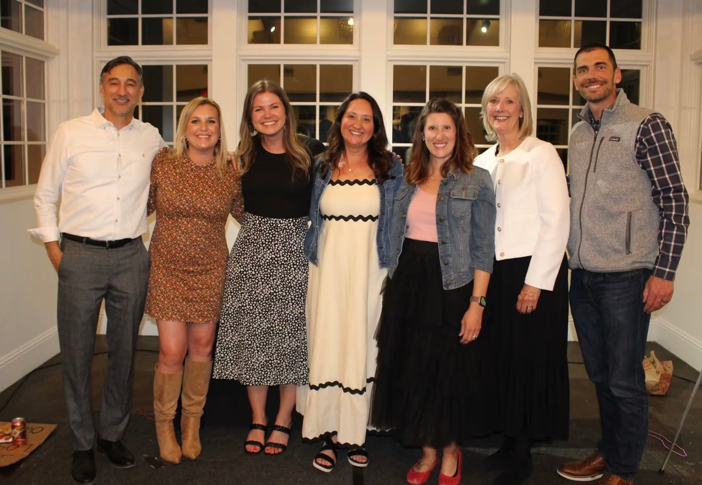

Each local Young Life area has a committee of adults who believe in the mission of Young Life: to introduce adolescents to Jesus Christ and to help them grow in their faith. You'll find adults from all different backgrounds, careers and churches, including lots of moms and dads who care deeply about kids.
Committees pray faithfully for kids and for Young Life, plan events like fundraisers and community socials, build relationships across the community, and support the staff and area director. The best and most fulfilling committee work happens outside of the monthly meeting — through these focused subcommittee roles.
Where We Serve
South Jeffco Young Life serves students at these schools in Lakewood, Littleton and Ken Caryl. Tap a pin or a school name for details.
Leader Care & Hospitality
Ensures that staff and volunteers receive the care, support and hospitality they need to be effective in the area mission to reach kids.
Prayer Team
Collects prayer requests from the local area staff and volunteers and prays together on a regular basis.
Events
Plans and executes fundraising events (banquet, golf tournament) in cooperation with staff and volunteers to raise financial support for the area.
Resource Development
Engages with local community groups and businesses to develop partnerships and drive forward the area's strategic vision.
Ready to get involved?
Pick one role or several. Our area director will reach out to talk through next steps.